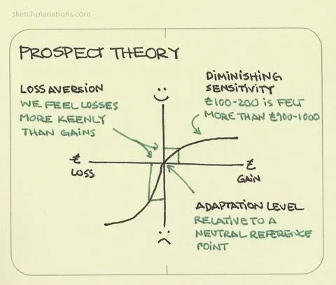
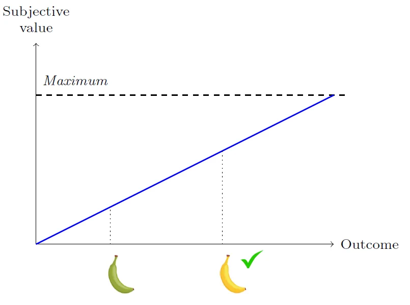
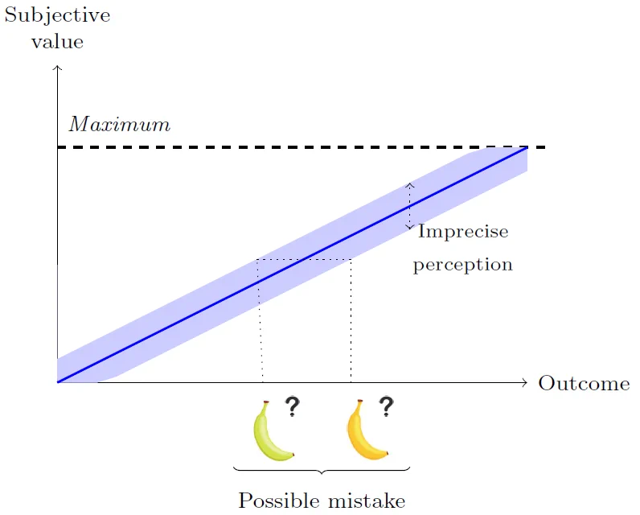
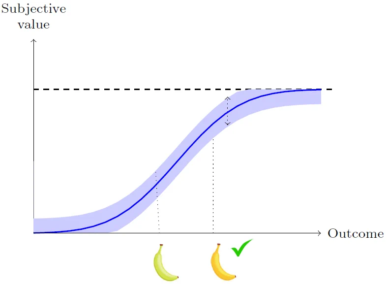
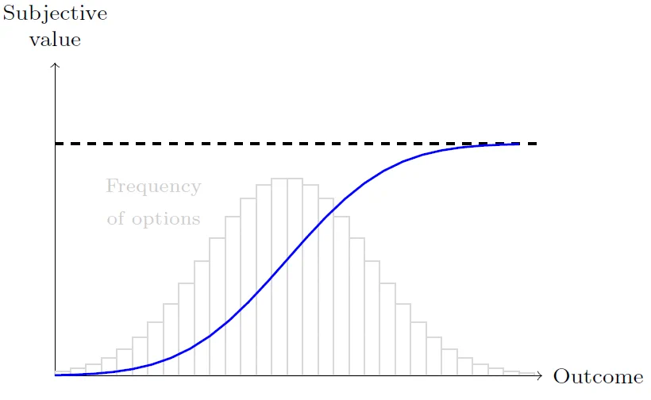

1 Choice, Preference and Utility
Microeconomics is decision theory plus a theory of interaction among decision-makers, in different environments
This is our working definition, and is not restricted to any specific field of science. This setup is very general and is used in other fields: political science, sociology, psychology, biology…
We will see specific models of decision theory, and specific models of social interaction, that are often used in economics. But it’s important to notice the difference between general theory and particular models.
1.1 Decision Theory
We begin with decision theory. To build a theory of individual choice, we need some assumptions:
1. Choices are possible
- Seems obvious, but sets us apart from many models from 19th century sociology
- Big discussions here. See Determined: a science of life without free will (Sapolsky, 2023)
- Important link to theory of agency in biology
- We usually model this through restrictions (see point 4 below)
2. There is a defined subject that makes decisions, in some circumstance
- (Usually) It’s and individual, not a set of individuals such as family nor parts of an individual such as Id and Ego – but there has been much development in this direction.
- We just need to separate individual from the whole society (or there would be no need to study interactions)
- This is not the selfish agent assumption, which we can also make in particular settings
3. Choices are made according to some criteria
- They are not purely random (at least not necessarily)
- This is the same as saying as there is some objective. Could be anything: profit, utility, leisure, stability, time with loved ones, watching as many world cup matches as possible…
4. Choices are subject to constraints
- One cannot simply choose ‘everything’. At the very least there is the opportunity cost of time.
- This is not necessarily a budget restriction: could be time, attention, memory, information, ability to process information, or external factors such as physical environment or laws, or simply other agents.
- In this course, we will consider a budget constraint, but this is just a particular case, and the absent restrictions are as important as the one(s) we will consider!
5. Consistency requirement: equilibrium
- Everyone is choosing according to the four previous assumptions at any point in time.
- In other words: given the criteria and the restrictions at some point in time, no one would like to change their decision at that moment.
- For a given individual, part of the environment is ‘other individuals making choices, and maybe they’re even taking my actions into account’
- This is NOT about absence of movement or change. There could be mistakes and regrets.
We typically write the first four points as
“Choose x to solve \max u(x) subject to restrictions on x”
Then we move on to interaction: no individual incentive to deviate, given what others are doing. In short, our structure is optimization + equilibrium. This is very general. Hard to work without it.
1.2 About assumptions
We’ve barely begun and already have some big assumptions.
We’ll make many other assumptions along the way. Pay attention to them: assumptions must be clearly understood. We usually write A \Rightarrow B: we must be able to understand what happens (B) under some circunstances (A). This is NOT them same as stating B (think of the first welfare theorem).
Assumptions have a tradeoff. On one hand, they take away generality: if we assume economic agents have perfect memory, we must be cautious when applying our model to agents without perfect memory. On the other hand, they allow us to better understand a (more restricted) setting.
This is the tradeoff of the lab rat. It’s easier to study, and we learn a lot from it, but must be aware of its limits. In our case, ‘homo economicus’, for example:
- Simplest economic model: maximize utility subject only to a budget constraint.
We study the homo economicus hoping to learn something about its distant cousin: homo sapiens. The more realist economic agent from behavioral economics is our ‘lab monkey’: the same tradeoff applies.
Is there a way around this tradeoff? No: it comes from our own limitations, as we cannot pay attention and process all available information. Think for a moment far from economics: zebras and lions. Where are their eyes placed? They “choose” to focus on some specific type of information, and give up on many things. It works according to some specific criterion: survival.
In economics (and any other field of science), we will make assumptions, whether it’s clear or not. The problem is the criterion we use to evaluate them. No “given” criterion such as survival. Major discussion about criteria, for every research question.
We may put it another way: there is a tradeoff to realism. If it’s too much: can’t really understand what’s going on, can’t make predictions. Borges’ map. If it’s too little: you’ll understand clearly something not relevant to your research question. Drunkard looking for his keys under the lamp post, not where he lost them.
In the end of the day, we use approximations, and we want predictions that can be tested to see whether these approximations are good enough. Keep in mind that external validity is always an issue, even when we have good empirical results, and this depends on how restrictive our assumptions are (must be extra careful with observational data!).
Lastly, a point about representation: a model of reality is different from reality. Implication: solving a model in decision theory is different from actually making that decision (same reasoning holds for anything else in science). Think of catching an object thrown to you (no actual functional analysis problem) or buying stuff at the grocery store (no actual lagrangian).
This goes back to theory of agency in biology: consciousness, representation and abstraction. Important: if the modeler knows more than the agents in the model, this must be modeled too! It’s some form of restriction.
As for criticism: when we criticize a model, we either say “A is not the relevant setup to consider” or “A does not really imply B”. Considering a different setup (A' instead of A) is not really a criticism – it’s just ‘doing something else’. Think of political and relief maps, or flat maps and globes.
We always have to ask: What are we building our models and theories for? What do we want to understand?
Models are made to be used, not to be believed
If they help us with something relevant, they’re doing their job: increase food production, cure a disease, decrease unemployment, etc.
Mathematics
Our assumptions often generate a setup that may be analyzed mathematically. Our optimization problem will be written as something similar to:
\max_{\{x\}} {f(x)} subject to some restriction
g(x) < 0
Yet, it is important to notice the difference between language and tools. We use mathematical language as in the example above. This does not mean we’re using any mathematical tools yet: this could be written in plain English. Often we will use actual mathematical tools: if f and g are differentiable functions, then we may use first-order conditions.
An additional point
- As science advances, it becomes more continuous, and less discrete.
- In economics, we fight too often over petty details (Freud: narcissism of small differences.)
We will start with the most basic model: the traditional homo economicus, our lab rat, whose only restriction is budgetary.
An example
Lionel Page fascinating explanation of Prospect Theory:

This is the most cited paper in economics: people value what they have by considering it as a gain or a loss relative to a subjective “reference point”. This point may be status quo, expectations, aspirations: not defined / agreed upon.
Reference dependent preferences are a cognitive flaw? The biological basis of economic behavior (Robson, 2001): subjective satisfaction can be seen as an informative signal that helps us identify the best option. Eating, sleeping and having sex ‘feel good’ because they help us survive: subjective satisfaction is informative signal.

But brain (neurological processes, more generally) have constraints when generating signals of satisfaction:
- Signals must be bounded because there is a limited number of neurons to process them
- Signals are not perfectly precise (drugs as hijacking)
Hence: we are more likely to make mistakes when options are close.

Can your system of perception be improved to reduce mistakes?
Yes. When the slope of subjective satisfaction increases, it reduces mistakes between options that are close.

But satisfaction is bounded: physical limit to pleasure (that is, to informativeness of signals). Then satisfaction cannot have a super high slope everywhere.
The question becomes: Where should the slope of subjective satisfaction be steeper to limit mistakes? The optimal solution is that it should be steeper where you are more likely to face options to choose from!

See also Rayo and Becker (2007) and Netzer (2009).
- Support from neuroscience: sensory systems respond to stimuli by following their distribution.
- Reference-dependent preferences are not a cognitive flaw. “They are an optimal solution, under irreducible biological constraints faced by our perceptual systems.” \rightarrow Efficient coding.
- Reference point is an expectation.
- Recent literature in economics and neuroscience.
In short: again, we have the problem “Choose x to solve \max u(x) subject to restrictions on x”. Restrictions that don’t show up are as relevant as those that show up.
Far from the only example… in fact, hard to think of economics without this structure (and hard in social sciences in general). What decisions are automatic, and what are well-thought? (Do you think about where to brush your teeth every day?)
Some difficult words
This setup is an approach based on optimization and equilibrium. Sometimes we talk about rational agents. All these words have multiple meanings and lead to confusion.
Optimization simply means that individuals make choices according to some criteria, given the relevant restrictions. But sometimes used as ‘perfect optimization’ or ‘hyper rationality’, which needs not be the case.
Rationality has different uses within microeconomics. First: similar to optimization under restrictions. Second: a particular set of basic assumptions on the decision-maker. We will use the latter. Sometimes (very often!) used in the sense of ‘super computational power’. This is usually the case in basic microeconomics: we only have a budget constraint, meaning there are no cognitive constraints. This is often referred to as ‘homo economicus’ of ‘homo rationalis’ and is simply our lab rat: we study it not because it’s realistic, but because it’s much easier to study, and many things we learn carry over to ‘actual’ humans.
Equilibrium means there is no unilateral incentive to change in a given context. Sometimes used, even within economics, in the sense of physics: lack of movement, or some very stable movement. This is NOT the meaning of the word in microeconomics.
1.3 Utility Maximization
Basic model of individual choice:
- A decision-maker (DM) must choose one alternative x from a set X.
- Chooses to maximize a utility function u.
- u specifies how much utility DM gets from each alternative: u: X \rightarrow \mathbb{R}
Example: DM chooses whether to eat an apple or a banana.
X =\{apple, banana\}
Utility function might say u(apple) = 7, u(banana) = 12. Observe that we already started to use mathematics – but only as language.
What do Utility Levels Mean? Hedonic Interpretation
Utility is an objective measure of individual’s well-being.
Nature has placed mankind under the governance of two sovereign masters, pain and pleasure. It is for them alone to point out what we ought to do… By the principle of utility is meant that principle which approves or disapproves of every action whatsoever according to the tendency it appears to have to augment or diminish the happiness of the party whose interest is in question: or, what is the same thing in other words to promote or to oppose that happiness. I say of every action whatsoever, and therefore not only of every action of a private individual, but of every measure of government.
Jeremy Bentham
“u (apple) = 7, u (banana) = 12” \rightarrow apple gives 7 units of pleasure, banana gives 12 units of pleasure. This is not the standard way economists think about utility.
What do Utility Levels Mean? Revealed-Preference Interpretation
Utility represents an individual’s choices.
- Individual choices are primitive data that economists can observe.
- Choices are taken to reveal individual’s preferences.
- Utility is a convenient mathematical construction for modeling choices and preferences.
“u (apple) = 7, u (banana) = 12” \rightarrow individual prefers bananas to apples.
“u (apple) = 2, u (banana) = 15” \rightarrow individual prefers bananas to apples.
1.4 Choice
How can an individual’s choices reveal her preferences? A choice structure (or choice dataset) (\mathscr{B}, C) consists of:
- A set \mathscr{B} of choice sets B \subseteq X.
- A choice rule C that maps each B \in \mathscr{B} to non-empty set of chosen alternatives C(B) \subseteq B. C is a correspondence.
Interpretation: C(B) is the set of alternatives the DM might choose from B.
1.5 Preference
Goal: relate observable choice data to preferences over X.
A preference relation \succcurlyeq is a binary relation on X.
“x \succcurlyeq y” means “x is weakly preferred to y”
Given preference relation \succcurlyeq, define:
- Strict preference (\succ): x \succ y \iff x \succcurlyeq y but not y \succcurlyeq x.
- Indifference (∼): x ∼ y \iff x \succcurlyeq y and y \succcurlyeq x.
Think a little bit about logic and set theory here.
Rational Preferences
To make any progress, need to impose some restrictions on preferences.
Most important: rationality.
Definition 1.1 A preference relation \succcurlyeq is rational if it satisfies:
Completeness: for all x, y, x \succcurlyeq y or y \succcurlyeq x.
Transitivity: for all x, y, z, if x \succcurlyeq y and y \succcurlyeq z, then x \succcurlyeq z.
If \succcurlyeq is rational, then \succ and \sim are also transitive. (Prove this!)
Hard to say much about behavior of irrational DM.
Maximizing a Preference Relation
Optimal choices according to \succcurlyeq:
C^*(B,\succcurlyeq) = \{x \in B: x \succcurlyeq \in y, \forall y \in B\}
\succcurlyeq rationalizes choice data (\mathscr{B}, C) if C(B) = C^*(\mathscr{B}, \succcurlyeq) for all B \in \mathscr{B}.
Fundamental Question of Revealed Preference Theory
When does choice data reveal that individual is choosing according to rational preferences?
Definition 1.2 Given choice data (\mathscr{B}, C), the revealed preference relation \succcurlyeq^* is defined by x \succcurlyeq^* y \iff there is some B \in \mathscr{B} with x,y \in B and x \in C(B).
x is weakly revealed preferred to y if x is ever chosen when y is available. Notice that this allows for y \in C(B) as one may have x ∼ y.
x is strictly revealed preferred to y if there is some B \in \mathscr{B} with x, y \in B, x \in C(B) and y \notin C(B).
WARP
Key condition on choice data for \succcurlyeq^* to be rational and generate observed data: weak axiom of revealed preference (WARP).
Definition 1.3 Choice data (B,C) satisfies WARP if whenever there exists B \in \mathscr{B} with x, y \in B and x \in C(B), then for all B' \in \mathscr{B} with x,y \in B', it is not the case that both y \in C(B') and x \notin C(B').
“If x is weakly revealed preferred to y, then y cannot be strictly revealed preferred to x”
X = \{x,y,z\}
\mathscr{B} = \{\{x,y\}, \{x,y,z\}\}
Choice rule C_1: C_1(\{x,y\}) = \{x\}, C_1 (\{x,y,z\}) = \{x\}
Satisfies WARP: x is weakly revealed preferred to y and z, nothing is strictly revealed preferred to xChoice rule C_2: C_2(\{x,y\}) = \{x\}, C_2(\{x,y,z\}) = \{x,y\}.
Violates WARP: y is weakly revealed preferred to x, x is strictly revealed preferred to y. This is Exercise 1C1 (MWG).
Fundamental Theorem of Revealed Preference Theory
Theorem 1.1 If choice data (\mathscr{B}, C) satisfies WARP and includes all subsets of X of up to 3 elements, then \succcurlyeq^* is rational and rationalizes the data: that is, C^* (B, \succcurlyeq^*) = C(B). Furthermore, this is the only preference relation that rationalizes the data (MWG Proposition 1.D.2). Conversely, if the choice data violates WARP, then it cannot be rationalized by any rational preference relation. (MWG Proposition 1D1).
For the first part: Remember \mathscr{B} is a set of sets: this condition states that it must include all sets of up to three elements. Check MWG example 1D1 to see that we cannot drop this assumption.
- Let’s prove the first part.
We need to show that:
- \succcurlyeq^* is rational;
- C^* (B, \succcurlyeq^*) = C(B);
- \succcurlyeq^* is the only preference relation that satisfies ii.
For item (i), we must show that \succcurlyeq* is complete and transitive.
Complete. Take some \{x,y\} \in \mathscr{B}. This holds because \{x,y\} has only two elements. Then either x \in C({x,y}) or y \in C(\{x,y\}) (or both). In the first case, x \succcurlyeq^* y. In the second case, y \succcurlyeq^* x. Hence \succcurlyeq^* is complete.
Transitive. Take x \succcurlyeq^* y and y \succcurlyeq^* z. Consider \{x,y,z\ \in \mathscr{B}\} (again, it has no more than three elements, so it belongs to \mathscr{B}). We have to show that x \in C(\{x,y,z\}) because this implies x \succcurlyeq^* y: transitivity.
We know that C(\{x,y,z\}) \neq \varnothing.
- If y \in C(\{x,y,z\}): since x \succcurlyeq^* y, the weak axiom yields x \in C(\{x,y,z\}).
- If z \in C(\{x,y,z\}): since y \succcurlyeq^* z, the weak axiom yields y \in C(\{x,y,z\}), and from the previous line we have x \in C(\{x,y,z\}). In any case, x \in C(\{x,y,z\}), as we wanted to show.
This concludes the proof of item (i).
For item (ii), we proceed in two steps.
First: suppose x \in C(B). Then x \succcurlyeq^* y for all y \in B. Hence x \in C^*(B,\succcurlyeq^*). In short: every element x that belongs to C(B) also belongs to C^*(B,\succcurlyeq^*). In other words, C(B) \subset C^*(B,\succcurlyeq^*).
Second: suppose now x \in C^*(B,\succcurlyeq^*).
Then x \succcurlyeq^* y for all y \in B, as above.
Hence for each y \in B, there exists some B_y \in \mathscr{B} such that x,y \in B_y and x \in C(B_y): at the very least, one may choose B_y = \{x,y\}, which has only two elements and therefore belongs to \mathscr{B}.
Since C(B) \neq \varnothing, the weak axiom implies x \in C(B), by the same reasoning as in part i: whatever y may belong to C(B), it cannot be revealed as preferred to x because x \in C(B_y) and hence x \in C(B).
In short: x \in C^*(B,\succcurlyeq^*) \implies x \in C(B), or C^*(B,\succcurlyeq^*) \subset C(B).
Taking these two steps together, we conclude that C(B) = C^*(B,\succcurlyeq^*), finishing the proof of item ii.
For item (iii), remember that \mathscr{B} includes all two-element subsets of X. Hence the choice structure C(\quad) determines the pairwise preference over X of any rationalizing preference.
QED.
- The second part may be written as: if preferences are rational, then choice data (\mathscr{B},C) satisfies WARP. Let’s prove this.
Consider B \in \mathscr{B} such that x, y \in B, and x \in C^*(B,\succcurlyeq). Then x \succcurlyeq y. (“x is weakly revealed preferred to y”)
Consider B' \in \mathscr{B} such that x, y \in B', and y \in C^*(B',\succcurlyeq). Then y \succcurlyeq z for all z \in B'.
Transitivity then implies x \succcurlyeq z for all z \in B'.
But this is the same as saying x \in C^*(B',\succcurlyeq).
That is, we cannot find any B' such that y \succ x. (“y) cannot be strictly revealed preferred to x”). Hence, WARP is satisfied.
QED.
Theorem tells us how individual’s choices reveal her preferences: as long as choices satisfy WARP, can interpret choices as resulting from maximizing a rational preference relation.
We may conclude that if \mathscr{B} includes all subsets of X, then choice and preferences work together just fine. But this is too restrictive: think of budget sets.
We use then the Strong Axiom of Revealed Preference, a “recursive closure” of the weak axiom. If x is directly or indirectly revealed preferred to y, then y cannot be directly revealed preferred to x. The Strong Axiom is more restrictive in general than the Weak Axiom (but they are equivalent for two goods). The Strong Axiom is a necessary and sufficient condition for choices to be generated by rational preferences.
Question: choices usually follow WARP?
Yes – even more than that. Bedi and Burghart (2018):
“Choices made under the influence of THC, MDMA, and placebo were all GARP compliant. Thus, even when participants were acutely intoxicated with THC or MDMA, their choices remained consistent with the tenets of neoclassical choice theory.”
GARP is the Strong Axiom that allows for non-unique optimal choices.
Preference and Utility
Now that know how to infer preferences from choice, next step is representing preferences with a utility function.
Definition 1.4 A utility function u : X \rightarrow \mathbb{R} represents preference relation \succcurlyeq if, for all x,y, x \succcurlyeq y \iff u(x) \geq u(y)
banana \succcurlyeq apple is represented by both:
u(apple) = 7, \quad u(banana) = 12 u(apple) = 2, \quad u(banana) = 15
If u represents \succcurlyeq, so does any strictly increasing transformation of u.
Representing a given preference relation is an ordinal property. The numerical values of utility are cardinal properties.
What Preferences have a Utility Representation?
Theorem 1.2 Only rational preferences relations can be represented by a utility function (MWG Proposition 1B2). Conversely, if X is finite, any rational preference relation can be represented by a utility function (MWG exercise 1B5 - ‘X finite’ is only one possibility).
- Let’s prove the first part.
We may write it as: \succcurlyeq is represented by utility function implies \succcurlyeq is rational.
To show it’s rational, we have to show \succcurlyeq are complete and transitive.
Let’s show first \succcurlyeq are complete. Consider x,y \in X.
u(.) \in \mathbb{R} implies that necessarily either u(x) \geq u(y) or u(y) \geq u(x). In the first case, by definition of u, we have x \succcurlyeq y. Analogously, in the second case we have y \succcurlyeq x. Hence \succcurlyeq is complete.
Let’s show now \succcurlyeq are transitive. Take x,y,z \in X such that x \succcurlyeq y and y \succcurlyeq z. We have to show that x \succcurlyeq z.
By definition of u(.), it follows that u(x) \geq u(y) and u(y) \geq u(z). It then follows from the structure of the real numbers that u(x) \geq u(z). Again, use the definition of u(.) to conclude that x \succcurlyeq z. This is what we wanted to show, concluding the proof.
QED.
What Goes Wrong with Infinitely Many Alternatives?
Lexicographic preferences: dictionary system – e.g., “I’m not going by plane”.
X = [0,1] \times [0,1]
(x_1, x_2) \succcurlyeq (y_1, y_2) if either
- x_1 > y_1 or
- x_1 = y_1 and x_1 \geq y_2
Maximize first component. In case of tie, maximize second component.
Theorem 1.3 Lexicographic preferences cannot be represented by a utility function.
This is on MWG page 46.
Let’s prove this by contradiction. Assume there is a utility function representing the lexicographic preferences \succcurlyeq.
Fix some x_1 \in \mathbb{R}. Then:
u(x_1, 2) > u(x_1, 1)
Both u(x_1, 2) and u(x_1, 1) are real number. We will use the following mathematical result: we can find a rational number between any two real numbers.
Let’s call this rational number r(x_1):
u(x_1, 2) > r(x_1) > u(x_1, 1)
Notice now that if x_1 > x^{'}_{1}, then r(x_1) > u(x_1, 1) > u(x^{'}_{1},2) > r(x^{'}_{1}).
In short, x_1 > x^{'}_{1} \implies r(x_1) > r(x^{'}_{1}).
This means that r(.) is a strictly increasing function, and hence it is a bijection from \mathbb{R} to \mathbb{Q}.
But this is not possible.
QED.
Continuous Preferences
What if rule out discontinuous preferences?
Definition 1.5 For X \subseteq \mathbb{R}^n, preference relation \succcurlyeq is continuous if whenever x^m \rightarrow x, y^m \rightarrow y, and x^m \succcurlyeq y^m for all m, we have x \succcurlyeq y.
Lexicographic preferences are not continuous: see example 3C1 cont.
Let’s show this. Consider two sequences of bundles:
x_n = \left(\frac{1}{n},0\right) y_n = (0,1)
For any n we choose, we have 1/n > 0, and hence x_n \succ y_n. But lim_{n \rightarrow \infty}{x_n} = (0,0) \prec (0,1) = lim_{n \rightarrow \infty}{y_n}
That is, preference reverts in the limit: continuity does not hold, and hence \succcurlyeq are not continuous.
QED.
Theorem 1.4 For X \subseteq \mathbb{R}^n, any continuous, rational preference relation can be represented by a (continuous) utility function.
This is MWG Proposition 3.C.1 – a bit advanced.
The general proof is difficult. Let’s show a sketch, assuming additionally that preferences are monotone.
Consider only two goods (this is without loss of generality). For any \alpha \geq 0, define the bundle (\alpha, \alpha).
Pick some x = (x_1,x_2) \in \mathbb{R}^2_+. Notice that monotonicity implies x \succcurlyeq (0,0).
Notice also that if \left(\overline{\alpha}, \overline{\alpha}\right) \gg (x_1, x_2), then monotonicity implies \left(\overline{\alpha}, \overline{\alpha}\right) > (x_1, x_2).
One may show that there is only one value of \alpha \in [0,\overline{\alpha}] such that indifference holds.
We will call it \alpha(x):
\left(\alpha(x),\alpha(x)\right) \sim (x_1,x_2) Take u(x) = \alpha(x). This is our utility function.
QED.
Notice that this is very general. Assumptions are not very restrictive (not even X \subseteq \mathbb{R}^n).
Review of Revealed Preference Theory
- If choice data satisfies WARP, can interpret as resulting from maximizing a rational preference relation.
- If set of alternatives is finite or preferences are continuous, can represent these preferences with a utility function.
- Utility function is just a convenient mathematical representation of individual’s ordinal preferences.
- Utility may or may not be correlated with pleasure/avoidance of pain.